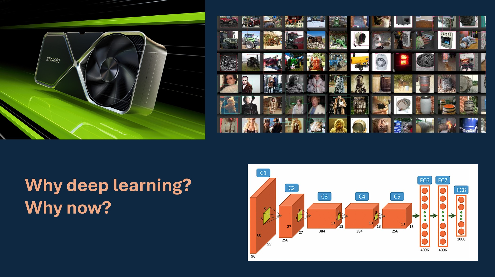
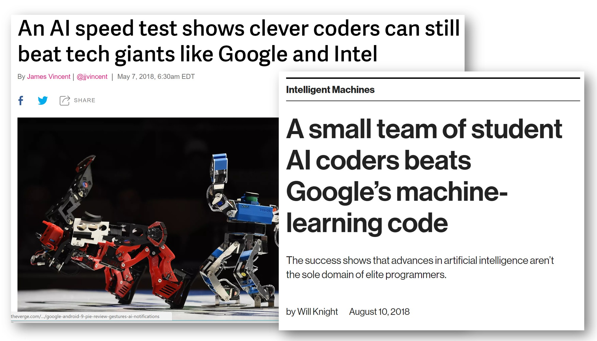
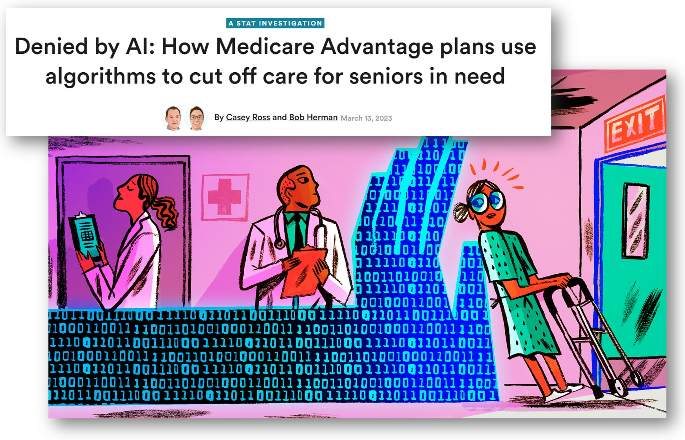
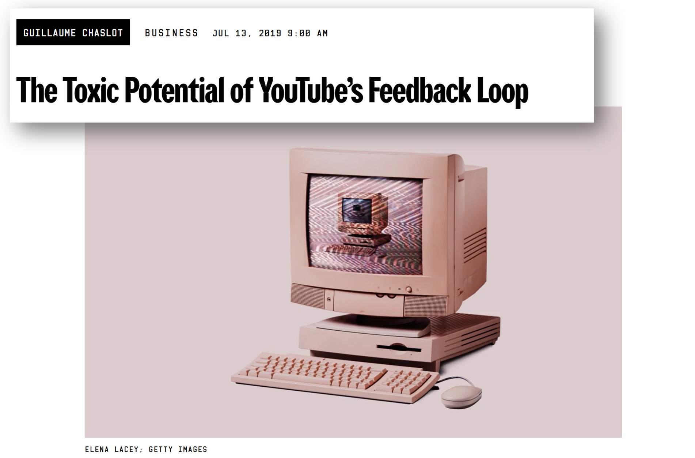
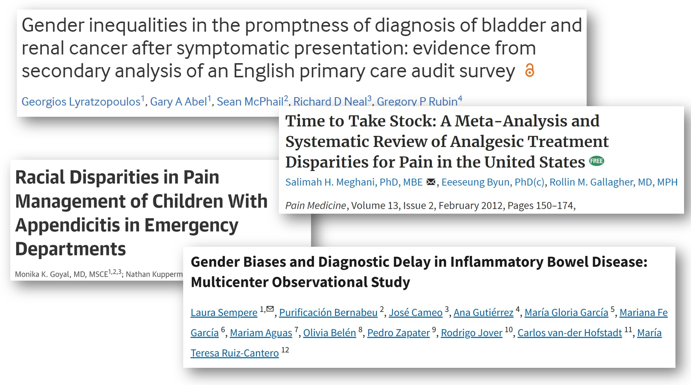
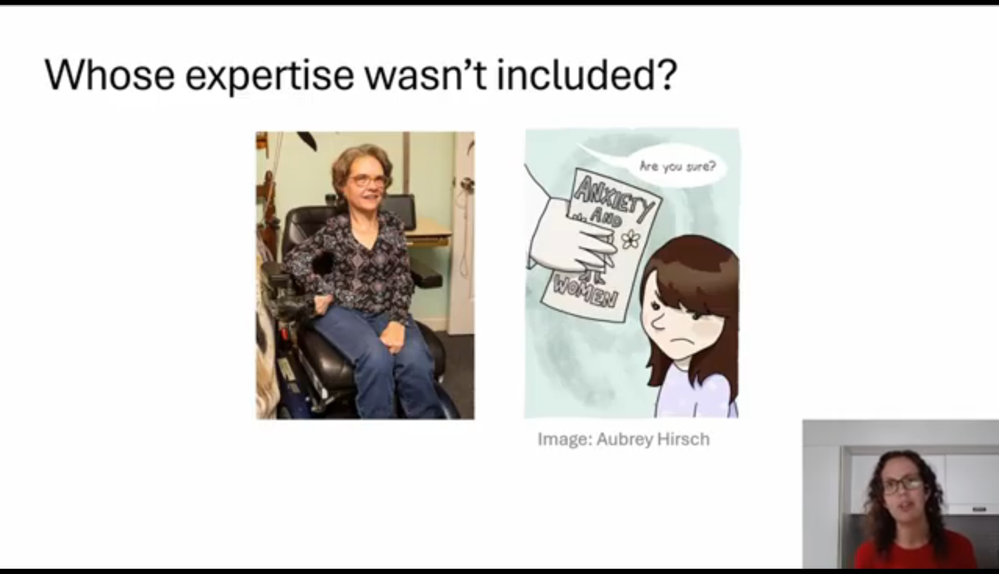

I recently gave a talk tying together many of the topics I care about most: the potential of AI in immunology, racial and gender bias in medicine, harms of AI in society, the systemic dismissal of patient experience by doctors, and the promise of participatory, patient-led approaches. I hope you’ll watch my 29 minute talk in full here:
Below is an edited transcript of the talk, with timestamps if you want to jump to specific sections in the video.
Introduction
[00:01]: I’ll be speaking about the opportunities and the risk of applying AI in medicine] and some of some of what’s currently happening in the field. As a brief bit of background about me, I earned my PhD in mathematics at Duke University and worked in the tech industry as a software developer and data scientist. Then in 2016, together with Jeremy Howard, I founded Fast AI. Our goal with Fast AI was to make deep learning more accessible and easier to use for people from a variety of different domain expertise areas. Our work was featured in The Economist, Forbes, MIT Tech Review, and elsewhere. And we’ve had millions of students take our courses and use our software library.
I became increasingly focused on the harms that machine learning was causing as well and I wrote three book chapters on data ethics as well as becoming the founding director of the Center for Applied Data Ethics at the University of San Francisco. More recently, I’ve become really fascinated with applications in microbiology and immunology. I went back to school and earned a master’s in the area because I believe domain expertise is so important and I’m now working on a PhD related to autoimmunity.
Promise in Medicine
[01:35]: AI is being applied to a lot of areas in medicine which hold a lot of opportunity and seem quite promising. One area is for drug discovery and drug design. The space of potential drugs out there is huge and so it can be very helpful to have machine learning to help iterate through and filter down which candidates may be the most promising for further study. A second big area where AI is being applied in medicine is to reading medical images, such as detecting Parkinson’s disease or strokes from images of the back of the eye.
A third area is taking a sequence of amino acids. Amino acids are the building blocks of proteins and so here on the left, this is hemoglobin written as its sequence of amino acids, and on the right is its 3D structure. So these two things are the same (they are both hemoglobin), but the 3D structure has has more information. The computer program AlphaFold, which is based on deep learning, made international headlines by smashing all previous records on how accurately it could predict structures. The developers of AlphaFold were awarded a Nobel Prize in Chemistry last year for their work. Protein folding has many, many applications. One that particularly interests me is to try to figure out what a T cell will bind to, which has applications to cancer vaccines.

What is Machine Learning?
[04:18]: Let me step back for a moment. I have shared some areas that are quite promising to think about of AI and medicine. But what what is AI? What is machine learning? AI is a pretty pretty wide umbrella, and I’m going to focus on deep learning, which is a subfield of machine learning. Let’s go all the way back to the 1950s, when IBM researcher Arthur Samuel coined the term machine learning.
A rules-based approach, which is not using machine learning, involves handcrafting relevant rules. And if you didn’t want to use machine learning, you could teach a computer to play checkers by programming the rules of checkers into the computer. Arthur Samuel had a different idea, which is that he didn’t want to teach a computer to play checkers, he wanted to teach a computer to learn to play checkers from previous data. Arthur wrote that instead of specifying in “minute and exact detail” what a computer can do, that he would rather have it learn from data. To apply this to this problem I mentioned earlier of protein folding, rules-based approaches often had scores about hydrogen bonds or different biochemical properties that are that are well known, whereas approaches such as AlphaFold rely on previous protein structures.
Machine learning algorithms LEARN to match inputs to outputs. And so for this reason, it’s very important to think about what your inputs are and what your outputs are. This is crucial. A lot depends on the input data. I want you all to keep this in mind when people are trying to sell you something because there’s a lot of snake oil out there, as well as often people may overhype discoveries, so you need to really think about the nature and quality of the input data and if what’s being claimed is even plausible.
Another key moment in the history of machine learning and of deep learning in particular comes from the late 1980s when Yann LeCun and a team developed a deep learning algorithm for the US Postal Service. Deep learning refers to multi-layered neural networks, a family of algorithms, and it involves a lot of matrix math. They used this algorithm to identify handwritten zip codes because the US Postal Service wanted a computer program that could sort letters. It is very useful to automatically sort letters by zip code. However, people have messy handwriting and tere are a bunch of different ways you can write each digit. Yann LeCun used multi-layered neural networks or deep learning to do this. And now when we hear about breakthroughs in AI in the news, typically they’re using deep learning.
Why now?
[07:35]: And so even though this dates back decades, it’s really only since 2012 that we’ve kind of reached this popular moment in deep learning where it’s being applied much more broadly. It’s achieving unprecedented success on a number a number of tasks. And there are three key components of why this is happening now:
- One is the existence of large enough data sets to train these algorithms. ImageNet is a key example of a data set of images that was curated for a competition.
- Compute power, in the form of GPUs. GPU stands for graphic graphics processing unit and it’s what’s used to render video games. The video gaming industry really pushed the computer development along that has been useful for deep learning as well because it’s the same same types of calculations.
- Algorithmic advances have made it more feasible to to train and use deep learning. Pictured below is the algorithm behind AlexNet, which won the 2012 ImageNet competition.

I was living in San Francisco in 2012 and saw that this seemed like a very promising and exciting area. However, there were a lot of barriers to entry at the time. You had to have done your PhD with a small handful of advisors and a lot of the practical knowledge was not being written down. People would publish theoretical math papers based on it, but it was hard to hard to learn practical details to implement it for yourself if you were outside a few elite institutions.
fast.ai
[09:33]: So in 2016, Jeremy Howard and I started Fast AI to try to address this problem. We really wanted to get experts from all sorts of domains able to use this technology and to really focus on the practical of kind of how how do you implement this in code. Most people that took our course, I’ll sometimes refer to them as students, but they were working professionals doing this in their part-time, in many cases wanting to learn learn how to apply deep learning to the field they were already working in or to pivot their careers. Many went on to get jobs at top top tech companies, to start their own startups, to work in research, kind of a wide a wide range of applications and a wide range of different fields where they’ve applied deep learning.
Our focus was quite unusual in that we were really interested in people with limited resources, which is most of the world. The focus of big tech companies is often on experiments that costs $50 million worth of computers, which almost nobody can do. We were interested in what you can do if you have very little compute power and limited resources and are working in these kind of unusual domains that are outside outside the focus of the the tech industry. This is actually something that can be an advantage. Resource constraints can drive creativity.
In fact, we in 2018, a team of Fast AI students beat teams from Google and Intel that had access to way more resources than we did. And the kind of the reason behind this is that our constraints and resources forced more creative solutions. And so I love this example and I I think there’s often a misconception of if you’re trying to do something that’s more accessible or reaching people from non-traditional backgrounds that it must be watered down or that it’s not state-of-the-art. This win of Fast AI over Google and Intel in a competition hosted by Stanford was covered in the MIT Tech Review and The Verge. I’m really proud of our students for that. And I love the idea of getting people from different domains using deep learning because you know about problems that nobody else knows about. And that’s that’s really important.

A question I have been asked many times over the years is, “isn’t this dangerous to make AI accessible to more people?” or “Don’t you worry about it falling into the wrong hands?” And while it’s not implicit in these questions, there’s often an assumption that as long as only billion-dollar elite corporations have access to this, we’ll all be safe, that these are the more ethical stewards of this technology. And I really disagree with that. In fact, I think it’s quite dangerous to have a very homogeneous and elite group in the tech industry creating creating things that impact the entire world. Having greater diversity and more backgrounds is important and very powerful.
ML centralizes power
[13:39]: That said, there is a lot that can and is going wrong, and people that are being harmed. And in many cases these harms can be caused by people from from elite companies or institutions. I spent many years studying and writing about the harms, looking at different case studies, and seeing patterns of key risks in machine learning. A lot of harms fall under this property that machine learning often has the effect of centralizing power. And it does this in several ways.
One is that it can be used at massive scale and cheaply. And that’s often the appeal; it can be used for for cost cutting endeavors, but those often involve a centralization of power. It’s often implemented with no system for recourse and no way to identify or correct mistakes. It’s adding another node of complexity to systems which can be used to evade responsibility. I’ll give examples of all of these in a moment. As systems become more complex, there’s another finger to point to and say, “well, it’s the algorithm’s fault”, which then if nobody feels responsible that doesn’t lead to to systems with good outcomes. It can create feedback loops where it kind of is creating an outcome and amplifying it. And I’ll speak about that in more detail in a moment. Sometimes people will say, “yes, machine learning is biased, but so are humans”. But there are published cases where machine learning amplifies biases from humans making them even larger.
Real world harms
[15:34]: A case study that I return to often comes from an algorithm that’s used in many US states to determine home healthcare benefits. And when it was implemented in one state, there was a bug in the code. This software error incorrectly cut care for people with cerebral palsy. And so people like this woman, Tammy Dobs, who’s featured here, had drastic and devastating cuts in her care that really impacted her quality of life to suddenly lose this care. And she she was given no explanation. She was like, “Why has this happened?” And they’re just like, “Well, that’s what that’s what the algorithm said.” Although she didn’t just need an explanatio, what she needed was actionable recourse. She needed a way to get this reverted and to receive her care again.
Eventually there was a lengthy court case and they discover the software bug. The patients got their care reinstated. But that is that is not an ideal process at all that they had to go all this time without care. This is actually a common issue: systems are implemented with no way to identify and address mistakes. I also want to point out that it was patients with cerebral palsy who noticed the air first. And that the people who are directly impacted noticed the error and they had no way to surface that information to anyone that would listen. More recently, there has been investigations into how Medicare Advantage is using AI algorithms to cut needed care.

This is not unique to the US. I live in Australia and we have had a scandal with Robodebt. This software was implemented by the government to determine if people had been overpaid welfare benefits and then automatically issue them debts that they had to pay back. And the way Robodebt was implemented was later found to be unlawful and used incorrect calculations. It was also set up where the burden of proof was almost impossibly high of what people needed to try to appeal. This ruined lives, including leading to suicides. Robodebt happened at a massive scale. The Australian government went from issuing 20,000 debts per year to 20,000 debts per week. That’s a 50x scale up. There are also a lot of examples from across the EU as well. Human Rights Watch has written a thorough report on this, How the EU’s Flawed Artificial Intelligence Regulation Endangers the Social Safety Net.
Feedback Loops
[19:28]: Feedback loops are another mechanism of centralization of power. Police departments use software to recommend how many police officers they should send to different neighborhoods of you know, we think there’s going to be more crime in X neighborhood and less crime in Y neighborhood, so let’s send more police to X. However, algorithms don’t just make predictions, they help determine outcomes. And if you send more police to a neighborhood, they are likely to make more arrests in that neighborhood than a neighborhood where there are no police. That data gets fed back into the algorithm. And so the algorithm might say, “Wow, you’re making a lot of arrests in neighborhood X. Send even more police there.” And you start creating outcomes and and amplifying them into runaway loops.
This same dynamic of feedback loops shows up in recommendation systems. YouTube recommends videos for you that will often start autoplaying. The YouTube algorithm learned that showing people conspiracy theories often gets them to watch even more conspiracy theories. “Wow, you liked this conspiracy theory. Here’s some more!” Because if people get hooked on conspiracy theories, they want to watch more. And this is true of many recommendation systems across different social media platforms and media platforms.

To recap, we’ve seen this centralizing effect. Machine learning centralizes power because it can:
- be used at massive scale, cheaply
- be implemented with no system for recourse & no way to identify mistakes
- be used to evade responsibility
- create feedback loops
- amplify, not just encode, bias
The risks of machine learning mirror existing shortcomings in medical system. Disempowerment is already a problem in medicine, and I really worry about how AI could make it worse. And so stepping stepping away from the machine learning for a moment, I want to talk about how how this problem shows up in medicine.
Failures of the Medical System
[22:01]: Dr. Ilene Ruhoy is a neurologist. She’s an MD PhD and she developed a 7 cm brain tumor. She was experiencing a variety of disturbing neurological symptoms. She knew something was wrong, but when she went to the doctor, and she went to multiple doctors, she recounts, “I was told I knew too much, that I was working too hard, that I was stressed out, that I was anxious.” They were dismissing her symptoms. And this went on for months. Eventually, eventually she did get the MRI, although her tumor was likely much larger at that point than if it had been diagnosed earlier, and got got rushed into emergency surgery. However, this is not not a one-off case.

There are studies on this. Almost 1 in 3 patients with brain tumors had to visit doctors at least five times before they received an accurate diagnosis. And so if you think about AI, you know, it can be exciting to hear about, oh, this is, you know, AI that can can read MRIs accurately, that’s not going to help patients whose doctors won’t take their symptoms seriously enough to order an MRI in the first place. This is not unique to brain tumors. Gender and racial bias are common in medicine. This is well documented and impacts everything from cancer diagnosis delays to how much pain medication is given. As I said before, machine learning is all about matching input data to outputs. Keep in mind this input data is very much going to be shaped by the patients who are misdiagnosed, the patients who were incorrectly dismissed or didn’t have their symptoms taken seriously.
A Deeper Problem than Bias
[24:06]: I believe that the problem is actually much deeper than bias. And bias is huge, but fundamentally, we’re talking about the relationship between patient expertise and medical authority here. Knowledge is often seen as a one directional flow from doctor to patient, without recognition of patient knowledge. The forms that patient expertise take can really vary. Patient expertise can be an umbrella term to include everything from the lived experience of knowing what is going on in your body to also including the patients that are out there reading lots of medical papers and keeping up on the literature. There are patients that are even publishing medical medical papers. And I’ll give a few examples of that in a moment. A lot of this comes back to this kind of question about whose expertise was or wasn’t included in the design and construction of these these systems. And this is an issue in machine learning as well, even for non-medical applications, about whose expertise is not included. Machine learning systems can fail catastrophically when expertise from those closest to the problem is not included.

A Path Forward
[25:37]: I want to end with some examples that give me hope. One of the best events I’ve attended in the past several years was the Participatory Approaches to Machine Learning workshop from ICML 2020. It is all online, so you can access the talks and papers. The organizers of this workshop were interested in seeking more cooperative, more democratic, more participatory approaches for how machine learning systems can can be designed and operated. We really need to consider how all stakeholders, including the people who will be most impacted, can and should be involved in in the creation and running of ML systems.
Pratyusha Kalluri, who’s an AI researcher, wrote an excellent article titled, “Don’t ask if AI is good or fair. Ask how it shifts power.” Who is going to have more or less power after after particular AI systems are implemented? That’s what really poses poses a risk for exploitation.
On the medical side, something that really gives me hope is to see efforts of patient-led research. Here is a neat paper that came out just six months ago, where the author of the paper has long COVID and she also has a doctorate in pharmacology. She surveyed 4,000 patients about over 150 different treatments that they’ve tried, and together with her co-authors did clustering of different subtypes of symptoms. She brought a deep knowledge that comes from being an informed and active patient that is plugged into patient communities. I love to see this type of research. There’s also a Patient-Led Research Collaborative that is publishing innovative work. The way the risks of machine learning mirror existing shortcomings in medicine and the potential negative negative synergy of how those could combine scares me. I look towards ideas of participatory approaches to machine learning and to patient-led research as sources of hope of how we might be able to to do this in more constructive ways.
So with that, if you have any thoughts or questions, I hope you’ll join me in the comment section below. Thank you.
I look forward to reading your responses. Create a free GitHub account to comment below.